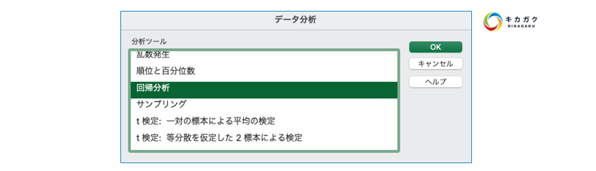

A(analysis、分析)：データに基づく分析・処理
多変量解析の基礎 - 相関と回帰分析
多変量解析（単変量解析を含む）では、予測・要因分析が可能です。つまり、データ間にある関係性を捉えることができます。更に良い点として、分析において重要な、ある変数にある変数がどのように影響しているのかを数値的に評価することができます。つまり、うまく解析を進めると変数の因果関係を読み取ることも可能なのです。
まとめると、多変量解析の手法では以下のような関係性を見つけることができます。また、数値で相対的に目的変数に対する影響度を比較することが可能です。（全ての多変量解析の手法がそうであるわけではありません。）
【実装】環境構築
ファイルタブを選択します。
左下のオプションボタンを選択します。
アドインを選択し、分析ツールを選択、その後、設定ボタンを押して下さい。
分析ツールにチェックを入れてOKボタンを選択します。
設定が完了しました。Excelにもどり、データタブを選択します。すると画像のように新たに分析ツールが選択できるようになります。
環境構築は以上です。分析の各種手法や検定等を行う際に使用します。
【確認】相関分析
相関分析とは文字通り、変数同士の相関を見る分析方法です。相関とは、互いに影響しあっているような状態または、関係の事を指します。
例えば、アイスの販売数と気温には、気温が上がればアイスが売れるという関係がありますが、これは相関のわかりやすい一例です。 相関分析を使用すると、関連性を相関係数という数値で定量的に評価することが可能です。つまり、相関分析とは、2 種類のデータの関係性の強さを、相関係数という数値で表す分析手法です。
下記について相関関係があるかどうかを調べます。
売上と銀行残高の相関関係
年齢と銀行残高の相関関係
相関関係を確認する方法として、散布図を用いて可視化を行い、可視化結果から相関の有無を判断するという方法があります。散布図で可視化を行うと下記のように表示されます。


画像のような結果になります。銀行残高と年齢には相関関係はあまりなさそうですが、銀行残高と売上に関しては相関がありそうです。
結果から下記のような気づきを得ることができます。
もともとの預金の多い人が定義預金講座を開講後も多くのお金を預けてくれる可能性が高い
我々の顧客は年齢によって銀行残高（貯金）に差があるということは言えない
【実装】相関係数をみる
可視化を行うことでおおよそ 2 つの変数の間に関連性があることが分かりました。 ですが現状は、確かにありそうであることは分かっても、「どれが最も関連性が強いですか？」という問いに回答できません。 つまりは相対的に比較ができる定量的な指標があればよいのですが、そこで相関係数が有効に用いることができます。
相関係数は、excelのデータ分析機能を使用して簡単に算出できます。 ここは、すべてのデータを使って確認します。（各満足度で絞ると、相関関数の計算の都合上、エラーとなってしまうためです）

相関の設定は下記のようにしてください。
入力範囲 : データ全体 先頭行をラベルとして使用 : ☑
結果以下のような値が算出されていれば成功です。 
【発展】因果関係
例えば、先程例に挙げた「アイスの販売数と気温」であれば、アイスの販売数 ⇒ 気温の関係でなく、気温 ⇒ アイスの販売数の関係であることが分かります。
上記のような例を「逆の相関関係」と呼んだりします。
重回帰分析
次にデータ分析で最も活用される分析手法についてお伝えします。 重回帰分析です。データ分析のタスクのうちの 6 割以上の案件にてこの手法が用いられているとも言われています。
多変量解析で行えることは大きく分けて以下の 2 つです。
要因分析
予測分析
単回帰分析では、2 つの変数の関係性をモデルで表現するにとどまりますが、重回帰分析では複数の変数を扱えるようになるため、できることの幅が広がります。
重回帰分析のモデル式は以下のようになります。

y: 目的変数（結果）
x: 説明変数（原因）
a: 偏回帰係数
b: 切片
上式からも重回帰分析は単回帰分析の拡張版でああることがわかります。
要因分析と予測分析
先程もお伝えしましたが、重回帰分析の使用用途は要因分析と予測分析に分かれます。
要因分析：複数ある要因（説明変数）のうち、目的変数に関連している度合いの大きいものを調べること
予測分析：要因分析を元に重回帰式を求めて未来の値を予測すること
単回帰分析では 1 対 1 の変数の関係を見ていたのに対し、重回帰分析では、1 対複数の変数の関係をみることになります。単回帰分析の回帰係数との違いとして、もともとのデータを上手く表現できている重回帰分析の偏回帰係数は、用いている複数の説明変数を考慮した上での目的変数に対するそれぞれの影響度合いが算出されています。
【実装】重回帰分析
Excelの分析ツールを使用して行いましょう。こちらはデフォルトでは使用できないため設定を行いましょう。
売上の高い→優良顧客の発見
成約はするが売上の低い顧客属性の発見
データ分析 → 「回帰分析」を選択します。

変数の定義 「入力 Y の範囲」に売上 「入力 X の範囲」にその他の項目（変数）を選択します。
画像のように設定ができたら OK ボタンを選択して、重回帰分析を実行しましょう。 a 分析の実装が完了すると下記のように実行結果が表示されます。
重回帰分析の結果の解釈
重回帰分析の結果の解釈を行います。
上図の注目すべき項目のみ着目して進めましょう。 回帰分析の結果の善し悪しを評価するものに、決定係数があります。決定係数は、モデルのデータに対する当てはまりの良さ（回帰式でデータをどの程度うまく表現できているか）を表す数値で、最大が 1 となります。 #### P 値 Excel での回帰分析では、係数や切片に対して p 値(両側検定の結果)という値が算出されます。先程確認したように、以下の組み合わせで仮説を立てて、検定という統計処理を行った結果算出される値です。p 値については、0 に近い値を取っていればよいというふうに取られておけば構いません。 ※ 検定については少し難解であるため、資料後半に入れています。
P 値が一定の値（一般に 5）を下回れば、説明変数は目的変数に対して影響を及ぼしていると主張できるようになります。
y =ax+b の場合、
帰無仮説：a = 0
対立仮説：a ≠ 0 #### T 値 先程の P 値は、説明変数が目的変数に影響しているか否かの判定には使用できますが、どの程度しているのかは判断できません。
重回帰分析の場合には t 値を使用することで、複数の変数の影響度合いを考慮し、どの説明変数が結果に最も影響しているのかなどを見ることが可能です。 t 値は偏回帰係数毎に算出されており、絶対値的に大きいほど目的変数に対する影響が大きいと判断します。また、t 値も目安の大きさがあり、t の絶対値が 2 より小さい場合は統計的にはその変数は目的変数に寄与しないと判断できます。」t値は個々の説明変数の有意性を判定するt検定で用いられる数値です
※ 別の方法として偏回帰係数をみて判断するという方法もあります。 #### 係数 係数は回帰式「Y = aX + b」のaやbの定数部分を表しています。 今回のケースでは、導き出された係数から以下の回帰式が算出されています。 この数値を見ることで、どの要素が目的変数に強い影響を与えているかがわかります。
※ いくつかの変数の後ろの「E-○」は、Eの前の数字×0.1 の○乗を指します。今のデータにおいては、とてつもなく小さな数字になることを押さえていれば問題ありません。
項目名 |
説明 |
|---|---|
重相関R |
相関係数のこと。 |
標準誤差 |
得られた推定量そのもののばらつきのこと。 |
観測数 |
分析に使ったデータ数のこと。 |
回帰 |
回帰直線（式）のこと。 |
残差 |
推定された回帰式が求めた値と、実際のデータの値の差のこと。 |
自由度 |
自由に決めることができる値の数のこと。現時点では、有意Fを求めるために必要な値。回帰の場合は、変数の個数を指すことが多い。 |
変動 |
偏差の平方和のこと。偏差とは、データの個別の値から平均値を引いたもの。 |
観測された分散比 |
F値のこと。有意F に使用する値。F検定に用いる。 |
有意F |
すべての係数が 0 である確率のこと。0に近ければ近いほどよく、0.05未満なら統計的に「全ての係数が 0 ではない」言える。 |
下限95% |
95%の確率で係数が取りうる値の下限のこと。 |
上限95% |
95%の確率で係数が取りうる値の上限 |
Excel での機械学習分析の注意
Excel での分析には制限があります。下記に注意してください。 - 主な実装は重回帰分析のみ 成約の分析などを行う際には回帰ではなく分類の手法が好ましいです。ロジスティクス回帰や決定木はExcelではサポートされておりません。 - 変数の制限 Excelでの重回帰分析では入力変数は 16 変数までときまりがあります。 - データの数値化 数式にかけるため、データはすべて数値化を行う必要があります。本データは講師側ですでに数値化を行いましたが実務では数値がをする必要が発生します。
まとめ
銀行残高・ローンの有無が売上の値と何かしらの関連がある
結婚状況が独身の方は売上に影響がある
【発展：デモ】ロジスティック回帰
そういったカテゴリを予測するような、分類のユースケースにて用いられる手法がロジスティック回帰です。回帰と名前がついておりますが分類の手法です。
Excel ではこのロジスティクス回帰は搭載されておらず、サードパーティのアドインを有効化し、利用する必要があります。
アドインツールをインストールします。デフォルトの機能では実装ができないため、サードパーティプラグをExcelに追加し実装を行います。 https://regressit.com/logistic-regression.html
ExcelのOptionからインストールしたアドインを追加する #### 実装
アドイン追加後、Excelを再起動し、Regresslt タブが追加されるため、タブを開く
SelectDataでデータの選択、CreateName で適当な名前をつける
LogisticLegression を選択して、目標値と入力値を選択する
結果の考察
実装が完了すると下記のような結果のシートが出力されます。
では結果を見てみましょう。確認をする主な指標は下記です。
Logistic Regression Equation:計算によって割り出された数式が記載されます。
Logistic Regression Statistics:重回帰分析のときと同じ様は表が表示されます
Coefficient:係数、数式に当てはまる重みです。
z-statistic:回帰係数を標準誤差(*1)で割った値で、誤差が小さいほどこの値が大きくなります。値が大きいほど結果が信頼できる
P-value:P値、0.05を下回っているかどうか(その変数が目的に対して影響しない確率が5％未満かどうか)で、その変数が目的に与える影響を判断
Std.coeff:標準化した値から算出される係数
続いて下記についても確認します。